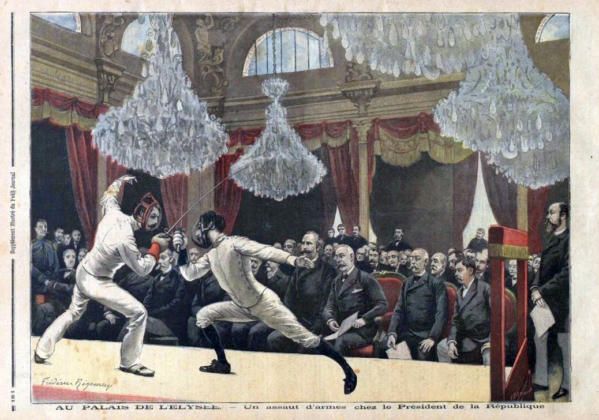
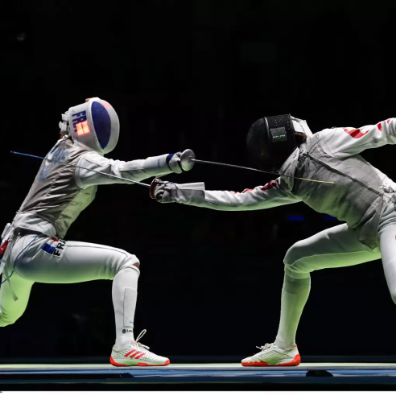

Histoire :
Les premières traces de combat à l'épée remontent vers 1190 avant Jésus-Christ. A l'origine, l'escrime n'était pas un sport mais un moyen d'entraînement militaire. C'est au 14ème/15ème siècle que ce dernier acquiert ce statut en Allemagne et en Italie. À cette époque, les premières guildes furent organisées en Allemagne, dont la célèbre Marxbrueder de Francfort en 1478. Puis l'escrime n'a cessé de grandir en popularité, notamment grâce à l'invention du fleuret et du masque en treillis métalliques. Avant même l'instauration des règles officielles de ce sport, la première compétition officielle d'escrime eut lieu en 1880 à Londres : le "Grand Military Tournament and Assaults at Arms".
Les premiers Jeux Olympiques de l'ère moderne furent organisés en 1896 à Athènes, Grèce. Dès la première apparition de cet événement, l'escrime y fut instaurée. Néanmoins, seules 3 épreuves furent disputées. Aujourd'hui, l'escrime figure parmi les sports les plus importants des Jeux Olympiques, et 12 épreuves sont organisées à chaque Jeux. Ces épreuves incluent des combats individuels, par équipes, masculins et féminins.

Présentation :
L'escrime est un sport de combat qui oppose deux athlètes équipés d'une arme blanche. L'objectif est de réussir à toucher son adversaire avec cette arme afin de gagner des points. Ce sport, pouvant être joué en compétition par équipe, est divisé en trois disciplines selon le type d'arme utilisé : le fleuret, l'épée et le sabre. Chacune de ces armes est différente et présente des spécificités. Avec le fleuret et l'épée, seulement les touches avec la pointe de la lame sont autorisés, contrairement au sabre. Les zones autorisées pour les touches sont également différentes, tout le corps pour l'épée, au dessus de la ceinture pour le sabre et uniquement le tronc pour le fleuret. Egalement, chacune de ces armes présente un style de jeu et de stratégie différent. Le fleuret est technique et précis, l'épée est défensive et nécessite de la patience pour trouver une faille dans le jeu de l'adversaire. Et le sabre est rapide et dynamique, il nécessite des bons reflexes dû à des échanges rapides.